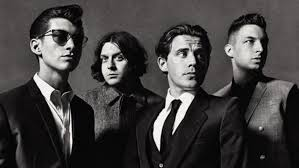
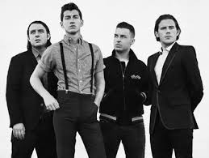
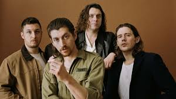
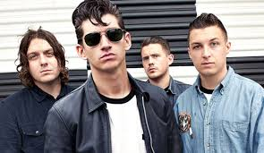
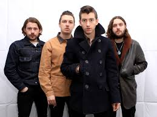
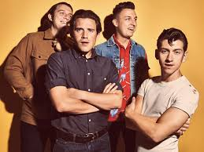
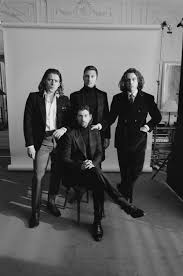

|  |  |  | ||
|  |  |  |  |
| TITULO | LETRA |
| 505 |
I'm going back to 505 If it's a seven hours flight Or a forty-five minute drive In my imagination You're waiting lying on your side With your hands between your thighs Stop and wait a sec When you look at me like that My darling, what did you expect? I probably still adore you With your hands around my neck Or I did last time I checked I'm not shy of a spark The knife twists at the thought That I should fall short of the mark Frightened by the bite No, it's no harsher than the bark A middle of adventure Such a perfect place to start I'm going back to 505 If it's a seven hour flight Or a forty-five minute drive In my imagination You're waiting lying on your side With your hands between your thighs But I crumble completely when you cry It seems like once again you've had to greet me with goodbye I'm always just about to go and spoil the surprise Take my hands off of your eyes too soon I'm going back to 505 If it's a seven hour flight or a forty-five minute drive In my imagination You're waiting lying on your side With your hands between your thighs And a smile |
| Fluorescent Adolescent |
You used to get it in your fishnets Now you only get it in your night dress Discarded all the naughty nights for niceness Landed in a very common crisis Everything's in order in a black hole Nothing seems as pretty as the past though That Bloody Mary's lacking her Tabasco Remember when you used to be a rascal? Oh, that boy's a slag The best you ever had The best you ever had Is just a memory and those dreams Weren't as daft as they seem Not as daft as they seem My love, when you dreamed them up Flicking through a little book of sex tips Remember when the boys were all electric? Now when she's told she's gonna get it I'm guessing that she'd rather just forget it Clinging 'til I'm getting sentimental Said she wasn't going but she went still Likes her gentlemen to not be gentle Was it a Mecca dobber or a betting pencil? Oh, that boy's a slag The best you ever had The best you ever had Is just a memory and those dreams Weren't as daft as they seem Not as daft as they seem My love, when you dreamed them up Oh, flo Where did you go? Where did you go? Where did you go? Oh Falling about You took a left off Last Laugh Lane Just sounding it out But you're not coming back again You’re falling about You took a left off Last Laugh Lane You were just sounding it out No you're not coming back again You used to get it in your fishnets (falling about) Now you only get it in your night dress Discarded all the naughty nights for niceness (you took a left off Last Laugh Lane) Landed in a very common crisis Everything's in order in a black hole (you were just sounding it out) Is anything as pretty as the past though That Bloody Mary's lacking in Tabasco (you're not coming back again) Remember when you used to be a rascal? Oh |
| Arabella |
Arabella's got some interstellar-gator skin boots And a helter skelter around her little finger and I ride it endlessly She's got a Barbarella silver swimsuit And when she needs to shelter from reality She takes a dip in my daydreams My days end best when this sunset gets itself behind That little lady sitting on the passenger side It's much less picturesque without her catching the light The horizon tries, but it's just not as kind on the eyes As Arabella, oh As Arabella Just might have tapped into your mind and soul You can't be sure Arabella's got a 70's head But she's a modern lover It's an exploration, she's made of outer space And her lips are like the galaxy's edge And her kiss, the color of a constellation falling into place My days end best when the sunset gets itself behind That little lady sitting on the passenger side It's much less picturesque without her catching the light The horizon tries, but it's just not as kind on the eyes As Arabella, oh As Arabella Just might have tapped into your mind and soul You can't be sure (That's magic) in a cheetah print coat (Just a slip) underneath it I hope (Asking if) I can have one of those (Organic) cigarettes that she smokes (Wraps her lips) 'round a Mexican coke (Makes you wish) that you were the bottle (Takes a sip) of your soul and it sounds like Just might have tapped into your mind and soul You can't be sure |
| Snap Out Of It |
What’s been happening in your world? Oh What have you been up to? I heard that you fell in love Or near enough I gotta tell you the truth I wanna grab both your shoulders and shake, baby Snap out of it (snap out of it) I get the feeling I left it too late, but baby Snap out of it (snap out of it) If that watch don’t continue to swing Or the fat lady fancies having a sing I’ll be here waiting ever so patiently for you to Snap out of it Forever isn’t for everyone Is forever for you? It sounds like settling down or giving up But it don’t sound much like you, girl I want to grab both your shoulders and shake, baby Snap out of it (snap out of it) I get the feeling I left it too late, but, baby Snap out of it (snap out of it) If that watch don’t continue to swing Or the fat lady fancies having a sing I’ll be here waiting ever so patiently for you to Snap out of it Under a spell, you’re hypnotized (oooh) Darling, how could you be so blind? (Snap out of it) Under a spell, you’re hypnotized (oooh) Darling, how could you be so blind? I want to grab both your shoulders and shake, baby Snap out of it (snap out of it) I get the feeling I left it too late, but, baby Snap out of it (snap out of it) If that watch don’t continue to swing Or the fat lady fancies having a sing I’ll be here waiting ever so patiently for you to Snap out of it |
| R U Mine? |
I'm a puppet on a string Tracy Island, time-traveling Diamond cutter-shaped heartaches That come to find you four in some velvet morning Years too late, she's a silver lining Lone ranger riding through an open space In my mind, when she's not right there beside me I go crazy, 'cause here isn't where I wanna be And satisfaction feels like a distant memory And I can't help myself, all I Wanna hear her say is: Are you mine? Well, are you mine? Are you mine? Are you mine? Alright I guess what I'm trying to say is I need the deep end Keep imagining meeting, wished away entire lifetimes Unfair we're not somewhere misbehaving for days Great escape, lost track of time and space She's a silver lining, climbing on my desire And I go crazy, 'cause here isn't where I wanna be And satisfaction feels like a distant memory And I can't help myself, all I Wanna hear her say is: Are you mine? Well, are you mine? (Are you mine tomorrow?) Are you mine? (Or just mine tonight?) Are you mine? (Are you mine, mine?) And the thrill of the chase moves in mysterious ways So in case I'm mistaken, I Just wanna hear you say: You got me, baby Are you mine? She's a silver lining Lone ranger riding through an open space In my mind when she's not right there beside me I go crazy, 'cause here isn't where I wanna be And satisfaction feels like a distant memory And I can't help myself, all I Wanna hear her say is: Are you mine? Well, are you mine? (Are you mine tomorrow?) Are you mine? (Or just mine tonight?) Are you mine? (Are you mine tomorrow?) (Or just mine tonight?) |